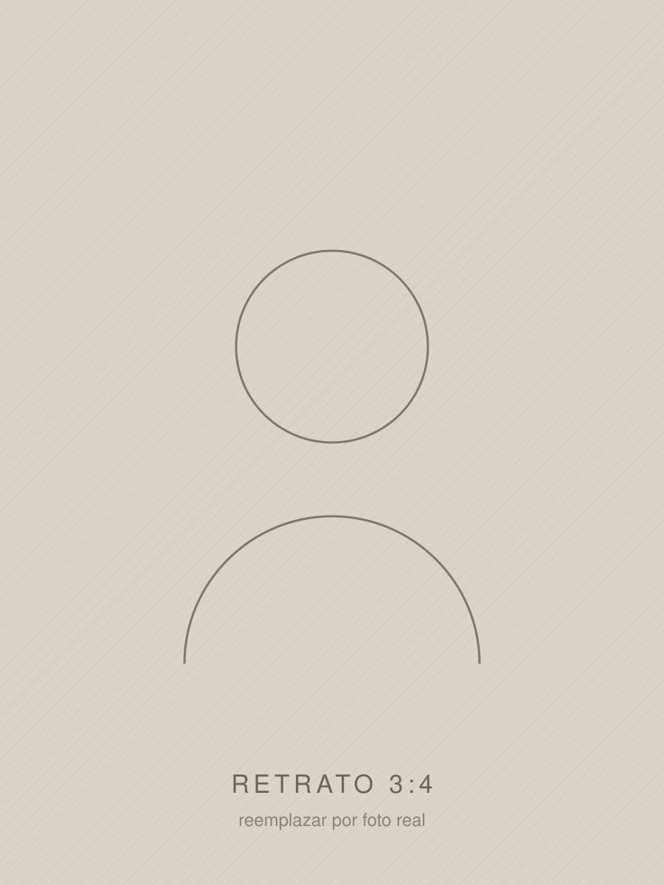

Transparencia
Balances en tiempo y forma, auditoría externa y un portal donde cualquier socio vea en qué se gasta cada peso.
Elecciones · Independiente · [fecha]
Cuatro años de gestión con plan, plazos y números a la vista. Sin promesas que no se puedan cumplir.

01 — Quién es
Texto de ejemplo. Acá va la biografía del candidato: de dónde viene, cuál es su vínculo con el club y qué lo trajo hasta esta candidatura. Conviene abrir con una escena concreta antes que con un currículum.
El segundo párrafo desarrolla la trayectoria profesional y la experiencia de gestión que respalda la propuesta.
Si hay antecedentes verificables en el club o en otras instituciones, este es el lugar: son el principal argumento de credibilidad de toda la pieza.
[Dato a confirmar] — cualquier cifra, fecha o antecedente concreto debe verificarse antes de publicar.
02 — El plan
Balances en tiempo y forma, auditoría externa y un portal donde cualquier socio vea en qué se gasta cada peso.
Un proyecto deportivo con criterio y continuidad, que deje de improvisar cada seis meses.
Volver a producir jugadores propios: inversión sostenida en juveniles, infraestructura y formación.
Atención que funcione, beneficios reales y participación efectiva en las decisiones.
Plan de obras priorizado y con plazos públicos para el estadio, el predio y las sedes.
El club como institución: disciplinas amateur y presencia real en Avellaneda.
La idea
Un club no se dirige con promesas. Se dirige con un plan.
03 — En primera persona
04 — El equipo

Vicepresidencia
Secretaría general
Tesorería
Fútbol profesional